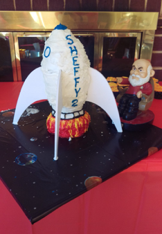

Not Just Any Cake
Sunday, January 21, 2018
 First, let me say that in my years of baking I have never found a cake recipe that I liked enough to replace the easiness and taste of Betty Crocker moist cake mixes. If I had more time, I might have made my own icing, but Duncan Hines cans are great in a pinch. Or really, at any point. Some things just aren't worth the effort for the return. This is coming from the woman who makes her own vanilla, and once made her own Amaretto but lamented the fact that she had no way of making her own almond extract to use.
My first son turned two years old a week ago. He's not quite at the point where he could tell us what he wanted his birthday to be, so we just decided on a generic "Space" theme. My husband came up with the brilliant idea of having a rocket ship cake. I think he expected me to come up with something like a rocket ship drawn with icing on a sheet cake, but that's for wimps and moms who have no time (like me). Besides, who hasn't wanted to take on the challenge of a three dimensional cake! And what better object to try it out on but rocket ship!
I pulled out some graph paper and drew myself a rocket ship, knowing that cake layers tend to rise to about 2 inches. Each square represented one inch, and I wanted something about 12 inches high. 6 layers, or 3 small layered cakes. The math wasn't working out with the diameters I needed for me to be able to cut these out of a 9x13 pan, so I found some smaller cake pans online and Amazoned them to myself next-day.
If you search for how to bake level cakes online, the prevailing method seems to be shredding an old towel into strips, soaking them in cold water and tying them around your cake pan. It sort of worked for me. It's hard to tell without a control cake how much it helped.
I used my diagram to trim the 6 small round cakes down to proper size and shape and started assembly. The very bottom of the cake consisted of one layer of flames, and one layer made of the rocket nozzle and the very bottom of the ship. I started out with a base of orangish red frosting, then added yellow streaks that I wiggled in to mix with the red a little (my father's idea). I then cut bamboo skewers down to the height of the two layers plus some frosting and 3 of those into the cake. I put a cake board that was also trimmed down and covered with foil on top of the skewers to help support the additional weight of the cake.
Since the cake was still pretty fragile, I decided it made sense to assemble and ice the layers individually. Shortly after placing the second layer on top of the first, it toppled off. I think this was the first time I've had to bring out a level to help with baking. The first layer was a bit tilted, so re-inserted the skewers to try and even them out a little. It helped a little, but so did the fact that in its topple over, the second layer also became uneven.
My husband made the fins for me out of foam board, so my father suggested sticking toothpicks into those to help them hold the cake upright better. Genius! Who knew he was so good at cake baking? With the 2nd layer back on and oriented so the two tilts would cancel each other out, it was much more stable. The fins easily stuck in and provided even more reassurance that the whole thing wouldn't fall apart before anyone even saw it. More skewers and another cake board and the third layer went on without any issues!
Final touches included Sheffield's name (shortened to his nickname Sheffy for space reasons) and details like the windows. I rounded the whole thing out with planetary-looking cupcakes.
When it cake time sing happy birthday, I put sparkler candles I had found into the bottom layer to try and simulate the rocket fire. Unfortunately, sparkler candles don't seem to spark unless they're upright. Oh well, it still looked cool and tasted awesome!